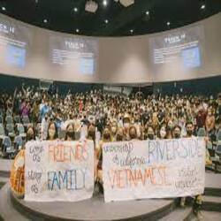
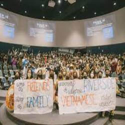
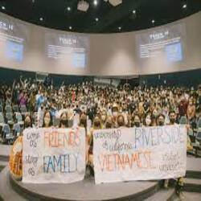

Damien Nguyen
Hello, My name is Damien Nguyen, and I go to University of Riverside and I am a part of the class of 2026. This resume is about myself, and the hobbies, extracurriculars, and some special parts about me that make me stand out to other candidates from the major I am taking. The reason why I am taking Marketing, because I feel like I have a way with the way I express myself in the clubs I represented myself in the Vietnamese Student Association, and with other clubs I did in highschool. I chose to do Business Administration, and go into the program of Marketing, because I was taught about this early on in highschool. I was also interested early on about the idea of social media influence. I feel like I can gain so much on what it is like to express yourself on social media, and to make crazy and unique designs on websites or social media.
In highschool I found it really difficult to reach out to make awareness or spread news about the club I supported at the time. It was really hard, but through time and effort I found a love of making fliers, making social media marketing, and how I wanted to express my club the way I wanted to. I also learned communication skills within the Vietnamese Student Association, because I had to communicate with a team environment to learn how to solve problems we had in the association. I started to notice how important web designing, and social media was to be a successful marketing major. So I took classes outside my credited classes on web designing, and pushed myself to become more creative with how to express myself through social media. And to push out publicity and news through creative ways that may be appealing to the eye.All of these clubs helped me with enhancing my skills on a better level, and showed how I can use these in my future career.
Now attending University of Riverside, I feel like I have a headstart on what I need to focus on, and to identify my strengths and weaknesses this early on, is important to become a successful marketing major. I am excited to get more experience, hopefully landing an internship, and hopefully landing a successful position in a successful business.
Experience
Public Relations
• In charge of making fliers for promotion
• Spearheaded fundraisers and raides over $2000
• Experienced with communicating under high stress
Head Shift
• In charge of making sure every employee is prent for shift
• Manged the problems during any shift
• Counted money at end of shift, and in charge of closing the store
Key Club Secretary
• Did attendance for members in the club
• Made Monthy Revenue Forms for the money raised every month
• Raised over $5000 of donations for multiple charities
Education
UC Riverside
Portfolio
 

